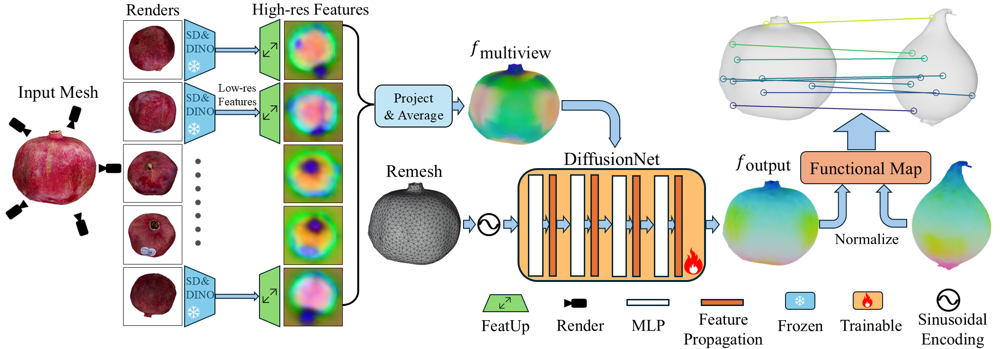

Method
DenseMatcher computes dense correspondences between two colored objects via the following stages: (1) 2D feature extraction, (2) 3D feature refinement, and (3) dense correspondence computation.
In the first stage, SD-DINO is used to extract 2D features maps from different rendered views. The feature for each vertex is then computed by averaging features retrieved from different views, as shown below.
Noisy Multiview Features \( f_\text{multiview} \) (Drag to Rotate)
In the second stage, since the above feature is noisy and does not utilize geometry information, we concatenate it with the vertex positions and then refine the feature with DiffusionNet, a 3D neural network architecture specifically designed for meshes.
Refined Output Features \( f_\text{output} \) (Drag to Rotate)
Finally, using refined features of two objects, we compute dense correspondences by solving for a functional map between them (with our own novel optimization constraints!)